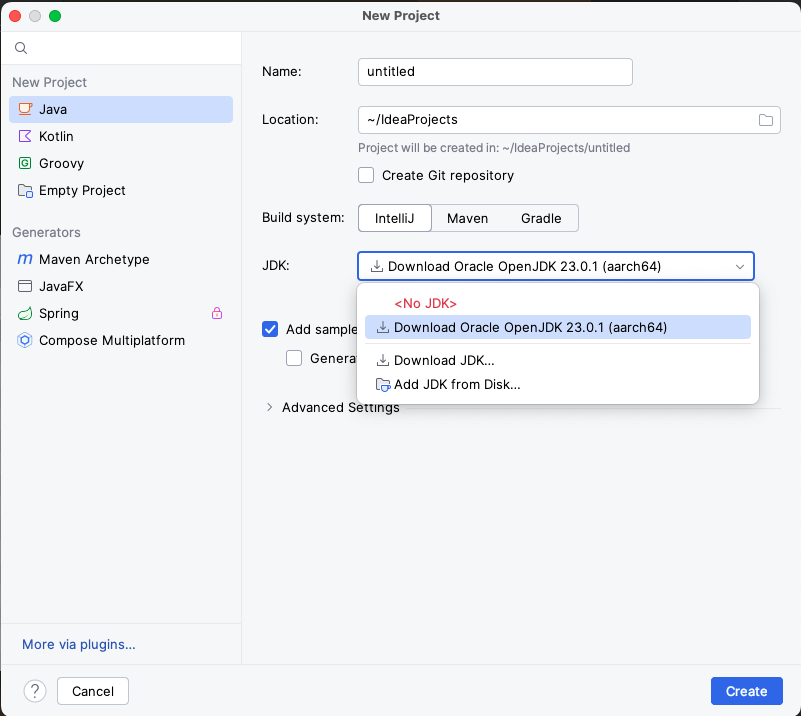
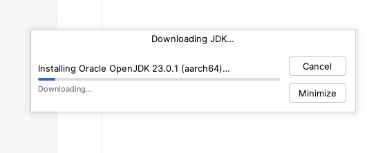

System Requirements
The basic requirements for the Appium server are:
- Install homebrew link here
- Install nodeJs link here
- Install InteliJ link here
- Install Appium link here
- Download Java JDK
There are many way to download Java JDK. I prefer to download IntelliJ IDE and then will download Java JDK after start it.
-

Click Create button, it looks like this
 - A macOS, Linux, or Windows operating system
- Node.js version in the SemVer range ^14.17.0 || ^16.13.0 || >=18.0.0
- LTS is recommended
- npm version >=8 (npm is usually bundled with Node.js, but can be upgraded independently)
Or You can download this from Oracle or Adoptium. Make sure you get the JDK and not the JRE.
By itself, Appium is relatively lightweight and doesn't have significant disk space or RAM requirements. It can even be run in resource-constrained environments like Raspberry Pi, so long as Node.js is available.
Driver Requirements
Drivers for automating specific platforms will likely have other requirements. Refer to the documentation of the Appium driver(s) for that platform for additional dependencies. It is almost universally the case that Appium drivers for a given platform will require the developer toolchain and SDKs for that platform to be installed.
In order to assist with driver requirements, each (official) driver comes with the Appium Doctor tool, which allows to verify if all requirements have been set up. Learn more about how to use this tool in the Command-Line Usage documentation.